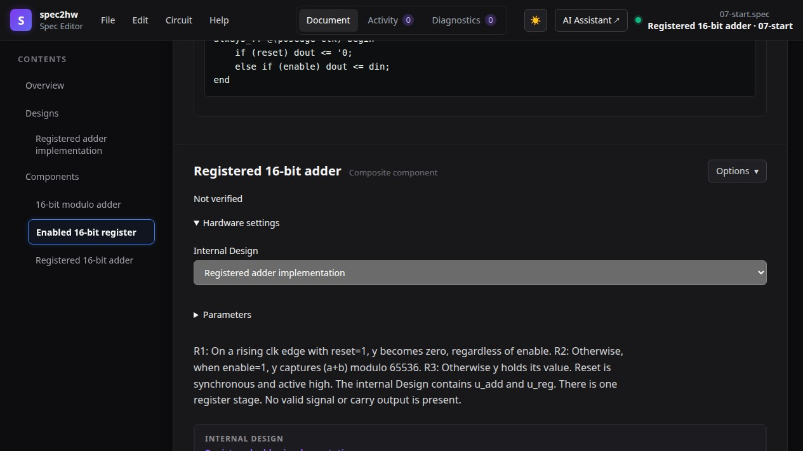
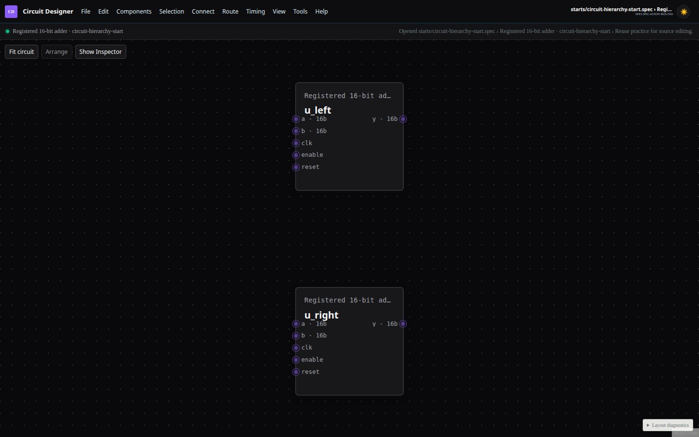

CIRCUIT DESIGNER · 7 MINUTES
Navigate hierarchy and reuse
Follow a Design into a child implementation and identify reused definitions.
Before you start
Spec Editor and Circuit Designer. Use a separate completed checkpoint copy.
Actions
- Open the containing Registered 16-bit adder and inspect its Internal Design assignment. Its implementation is a Design; the adder and register are leaf Components.
- In Spec Editor, create a new entry Design named Reuse practice. Add two instances of Registered 16-bit adder, named
u_leftandu_right. Use the same existing definition for both.


- Open Reuse practice in Circuit Designer. Select u_left, then Components → Open selected child design. Inspect u_add and u_reg. Finish or cancel drafts before entering or leaving a child Design.
- Return to the parent through its navigation controls. Inspect u_right’s definition reference. Both instances reuse one containing definition; the referenced internal Design is shared.
- Return to Spec Editor and reopen the Spec. Confirm two parent instances and the original seven internal connections. Leave the unconnected practice parent out of RTL generation.


Check your result
You can locate parent instances, one shared containing definition, its internal Design, and both leaf definitions.
Try it yourself
Change only one parent instance name. Confirm the other instance and shared definition keep their identities.
If it fails
If Open selected child design is disabled, select a composite instance. A leaf Component has no internal Design to enter.
Continue
CONTINUEExplore another feature →Reference: circuit designer · Complete example